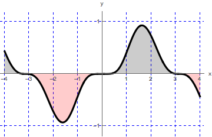

- (a)
- Find the following definite integral: \begin{equation*} \int _{-4}^4 \frac {x^2 \sin ^3(x)}{\sqrt {x^4 + 1}} \d x \end{equation*}Let \(f(x) = \frac {x^2 \sin ^3(x)}{\sqrt {x^4 + 1}}\). Then notice that\begin{align*} f(-x) &= \frac {(-x)^2 \sin ^3(-x)}{\sqrt {(-x)^4 + 1}} \\ &= \frac {x^2 (- \sin (x))^3}{\sqrt {x^4 + 1}} \quad \text {(since } \sin (x) \text { is an odd function)} \\ &= \frac {- x^2 \sin ^3(x)}{\sqrt {x^4 + 1}} \\ &= -f(x). \end{align*}
Thus, \(f\) is an odd function and therefore
\begin{equation*} \int _{-4}^4 \frac {x^2 \sin ^3(x)}{\sqrt {x^4 + 1}} \d x = 0. \end{equation*}We can illustrate our computation with the graph of the function \(f\), where
\(f(x)=\frac {x^2 \sin ^3(x)}{\sqrt {x^4 + 1}}\), for \(-4\leq x\leq 4\).
- (b)
- Suppose that \(f\) is an even function. Given that \(\int _0^6 f(x) \d x = 13\), find \(\int _{-6}^6 (5f(x) + 14) \d x\). First notice that\begin{equation}\label {linear integral} \int _{-6}^6 (5f(x) + 14) \d x = 5 \int _{-6}^6 f(x) \d x + \int _{-6}^6 14 \d x. \end{equation}
Since \(f\) is even, we know that
\begin{equation}\label {int of f} \int _{-6}^6 f(x) \d x = 2 \int _0^6 f(x) \d x = 2 (13) = 26. \end{equation}We also know that \(g(x)=14\) is also an even function. We have: \(\int _{-6}^6 14 \d x = 2\int _{0}^6 14 \d x\)
\begin{equation}\label {int of 14} 2\int _{0}^6 14 \d x = 2(14)(6) = 168. \end{equation}Then substituting equations (int of f) and (int of 14) into equation (linear integral) gives:
\begin{equation*} \int _{-6}^6 (5f(x) + 14) \d x = 5(26) + 168 = 130 + 168 = 298. \end{equation*}